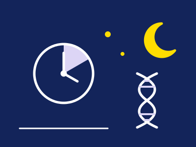
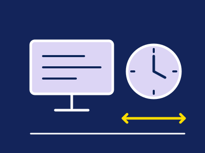
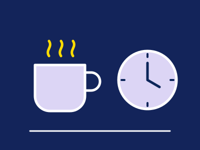
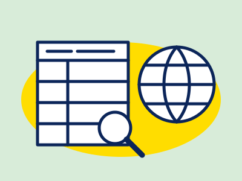
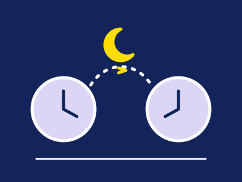
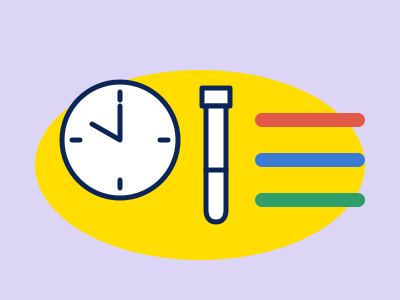
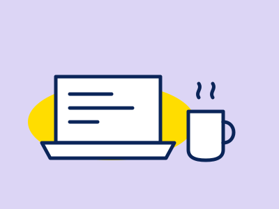
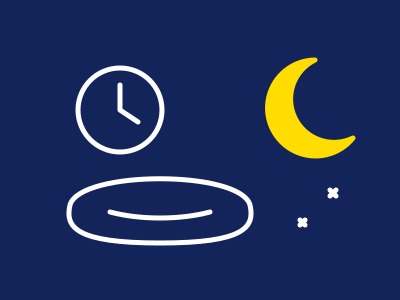

REST
公開 2026.10.30 / 更新 2026.10.30
公開 2026.10.09 / 更新 2026.10.30
公開 2026.10.09 / 更新 2026.10.29
公開 2026.10.09 / 更新 2026.10.29
公開 2026.10.09 / 更新 2026.10.30
公開 2026.10.07 / 更新 2026.10.29
公開 2026.09.13 / 更新 2026.10.30
公開 2026.09.13 / 更新 2026.10.30
睡眠・疲労
睡眠や疲れが気になるときの生活習慣の見直しと受診の目安、男性更年期（LOH症候群）の検査と基準の違いを、公的機関や学会の資料で整理した記事です。

SLEEP / SHORT SLEEPER & GENESショートスリーパーは本当にいる？
短い睡眠で足りる体質は本当にあるのか、訓練でなれるのか、「平気」と感じても足りているのかを、研究をもとに整理しました。
+ 記事を読む
REST / AAO, JAPAN & COCHRANEブルーライトカット眼鏡は仕事に必要？
ブルーライトカット眼鏡は仕事に必要か、大人と子どもそれぞれの見解と研究の確かさ、画面作業の休み方、眼科に相談する目安を説明します。
+ 記事を読む
REST / US, EU, CANADA & JAPANカフェインは1日どこまで？
カフェインは1日どこまでが目安か、国ごとの違い、コーヒー・お茶・エナジードリンクの量、寝る前に何時間あけるかを整理しました。
+ 記事を読む
REST / JAPAN & OVERSEASアシュワガンダとは？効果の研究・副作用と日本での扱い
アシュワガンダの効果の研究の限界と、肝臓への影響の報告、日本と海外での扱いの違いが分かります。
+ 記事を読む
REST / JAPAN, US & EUメラトニンはなぜ日本で市販されないのか
日本でメラトニンがサプリとして売られていないのはなぜか、米国・欧州との扱いの違い、個人輸入の注意点をまとめました。
+ 記事を読む
REST / JAPAN, US & EU男性更年期（LOH症候群）の検査と基準
男性更年期の検査は何科で受けるか、採血は何時ごろがよいか、国による基準の違いと手元の数値の読み方が分かります。
+ 記事を読む
FATIGUE / CHECK疲れが取れない・だるさが続くとき
疲れやだるさが続くときに振り返ること、続いている期間で考えられる原因、受診の目安、サプリの表示の確かめ方が分かります。
+ 記事を読む
SLEEP / JAPAN, UK & US睡眠の質が気になったら
睡眠の質が気になるときに見直したい睡眠時間・寝室・カフェインやお酒と、医師に相談する目安、睡眠サプリの区分の確かめ方をまとめました。
+ 記事を読む